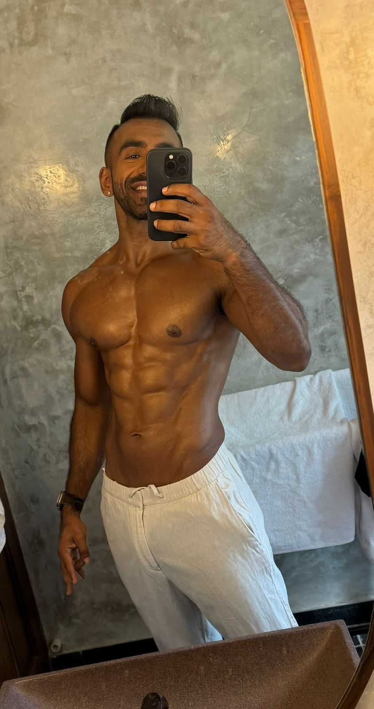
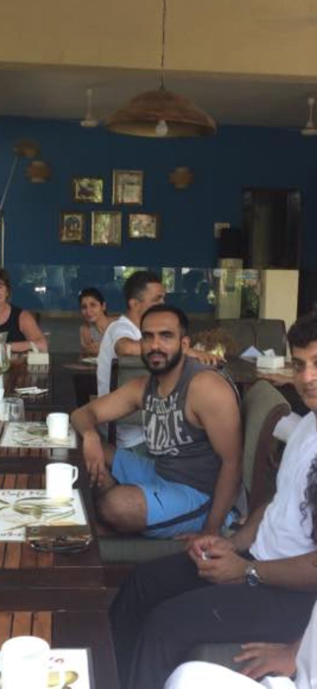

How I exited two startups without destroying myself.
The seven chapters I wish someone had handed me before the slipped disc, the stroke scare, and the quiet rebuild that followed.

The Luck ManualGet The Luck Manual, free.
Drop your email and we will send you the guide. You will also get The Deliberate Pause Monday Letter.
No spam. Just the occasional useful pause.
The ambition stayed. The way I carried it changed.
The difference was not wanting less. It was learning to build, recover, and make hard decisions without treating my body as collateral. The Luck Manual comes from that rebuild.

Seven chapters.
Click any chapter to read the snippet. Placeholder titles and copy for now, ready for the final text.
01Manufacturing your own luck surface
Placeholder snippet. Luck is not random; it is a surface area you can widen on purpose. This chapter covers how I started creating more of it without burning more of myself.
02The exit that nearly cost me my body
Placeholder snippet. The acquisition looked like proof. The slipped disc and the stroke scare told a different story. What I would do differently next time.
03Reading pressure before it reads you
Placeholder snippet. The skill that separates good operators from great ones: catching the moment pressure turns into reaction, and creating a gap.
04The decisions that compound quietly
Placeholder snippet. The unglamorous calls nobody posts about are usually the ones that compound. How to spot them and protect time for them.
05Recovery as a performance system
Placeholder snippet. Rest is not the reward for the work; it is part of the work. The recovery practices I now treat as non-negotiable.
06Detaching worth from the outcome
Placeholder snippet. When every result decides who you are, ambition gets expensive. How to keep building hard while loosening that grip.
07Building luck you can survive
Placeholder snippet. Pulling it together: ambition and recovery as one system, so the next win does not arrive at the cost of the person who built it.
Read by founders who needed it first.
"Five minutes before the board meeting. Three corners, one breath. The decisions land different now."
 Raghav KumarSVP
Raghav KumarSVP"I needed recovery, not intensity. Working with the rhythm instead of forcing through it changed everything."
Riya MittalAssociate Director"I now see failure as a data point, not a personal judgment. That is the difference between collapsing and adjusting."
Esha AroraProduct LeadGet The Luck Manual.
Seven chapters on building, exiting, and sustaining ambition without making your body pay for it. Free.
Send me the manual ->